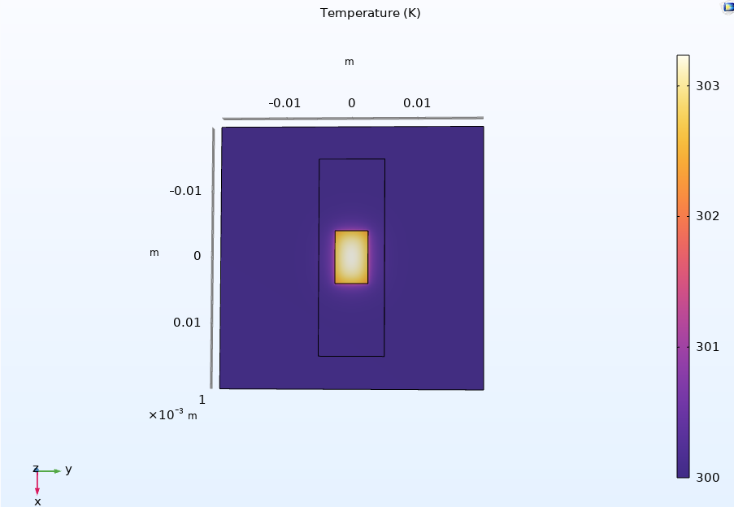
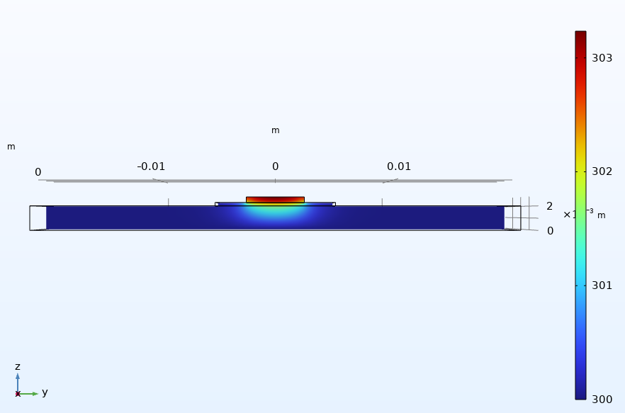
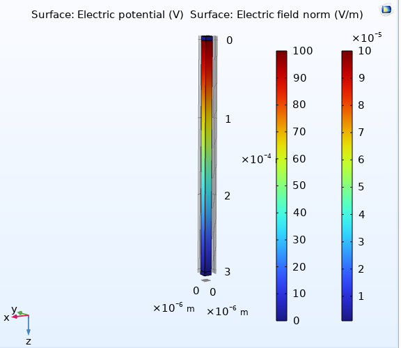
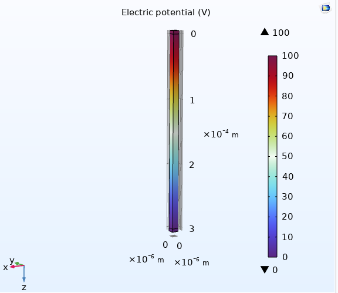
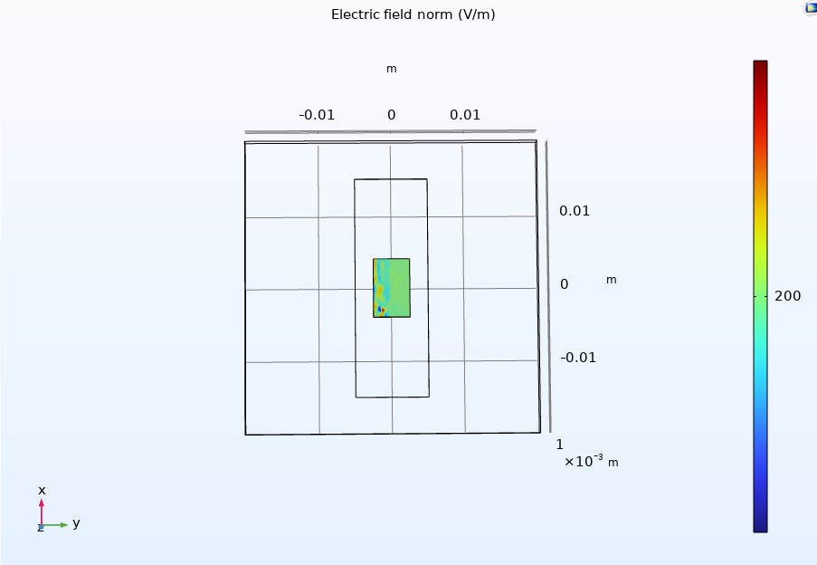
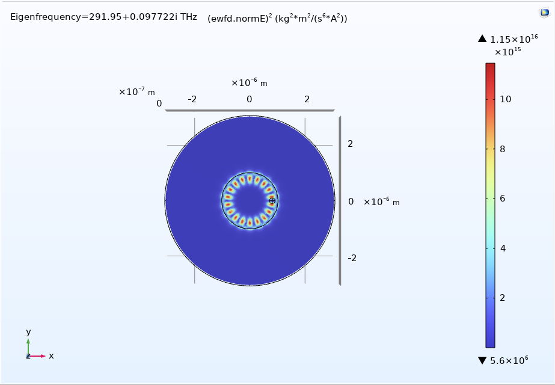
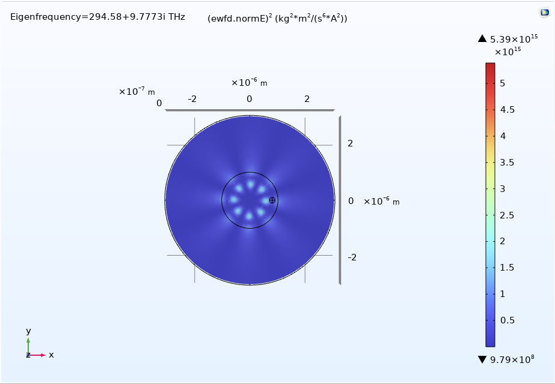

Four connected studies
Each project starts with a device question, translates it into a COMSOL model, and uses field or temperature outputs to understand where the response is concentrated.
Temperature distribution and electrical fields
Modelled the sensor structure to examine localized heating and the corresponding electrical potential, electric-field, and current-density distributions. The supplied temperature plots show a warm central region against a cooler surrounding sensor body.
The supplied profile is near a 300 K baseline and reaches a little above 303 K in the localized region. The electrode plots show a 0–1 V potential span in the displayed configuration.





Bias-dependent heating of the sensor and ASIC
Studied how applied voltage changes peak temperature in the sensor and ASIC for base temperatures of 77 K, 149 K, and 300 K. At every base temperature in the exported sweep, the peak temperature rise grows with bias. The ASIC peak rise is higher than the sensor peak rise at the same bias.
The exported tables report maximum temperature rise relative to the base temperature. Minimum-temperature tables are also included in the underlying study outputs.
Peak temperature rise vs applied bias


Fluence-dependent conductivity and leakage current
Set up a silicon sensor with top and bottom electrodes, applied a 100 V bias, and ran a stationary Electric Currents study with a fluence parameter sweep. In the model, silicon conductivity is parameterized as σ = σ₀ + αΦ.
The exported terminal current rises from 3.33 nA at zero fluence to 36.7 nA at 10²¹ m⁻², an approximately eleven-fold increase under the selected parameterization.
| Fluence (m⁻²) | Terminal current |
|---|---|
| 0 | 3.33 nA |
| 10¹⁸ | 3.37 nA |
| 10¹⁹ | 3.67 nA |
| 10²⁰ | 6.67 nA |
| 10²¹ | 36.7 nA |
Terminal current vs fluence
Electromagnetic eigenmodes and quality factor
Used the electromagnetic wave formulation to compute eigenfrequencies and visualize mode-dependent electric-field patterns in a disk-like sensor geometry. The study compares spatial field localization with the modal frequency and Q values exported by COMSOL.
The supplied eigenfrequency table contains modes from about 291.95 to 303.07 THz, with Q values from about 13.4 to 1,494. The field patterns differ substantially between modes; the chosen mode for sensing would depend on field overlap, coupling, and the intended perturbation.


Profile summary
I use COMSOL Multiphysics for device-level simulation of silicon sensors and detector electronics. My work includes electrothermal modelling of sensor and ASIC temperature rise versus applied bias at 77 K, 149 K, and 300 K; electric-potential, field, and current-density analysis; a parametric study of fluence-dependent silicon conductivity and terminal current; and electromagnetic eigenmode analysis of a quantum-sensor structure, including mode-field maps and quality factors. These studies support my broader experience in silicon detector characterization, front-end ASIC testing, and detector instrumentation.
All numerical values shown here are taken from the supplied COMSOL plots and exported tables. Results are simulation outputs under the modelled geometries, material parameters, and boundary conditions; no experimental validation is implied unless stated separately.